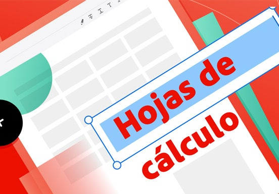

Tecnologias de Informacion en Comunicacion
Submódulo 1: Gestión de archivos de texto
Submódulo 2: Hoja de cálculo
Submódulo 3: Desarrollo y características de documentos electrónicos
Submódulo 4: Comunidades virtuales.
Submódulo 5: Mantenimiento y redes de cómputo
Submódulo 6: Sistemas de información.
Submódulo 7: Programación
Submódulo 8: Programación visual
Submódulo 9: Páginas web
Submódulo 10: Diseño digital.
Submódulo 11: Programación de aplicaciones de equipos móviles
Submódulo 1: Gestión de archivos de texto. |
APRENDIZAJES ESPERADOS: Construye documentos electrónicos utilizando las distintas herramientas de inserción y diseño, favoreciendo la comunicación ética y creativa, cubriendo las necesidades de su contexto.. |
Submódulo 2: Hoja de cálculo. |
APRENDIZAJES ESPERADOS:Emplea la hoja de cálculo con funciones avanzadas, tablas dinámicas y/o macros, para resolver problemas de manera consciente y responsable de su entorno laboral y académico.. |

Submódulo 3: Desarrollo y características de documentos electrónicos.. |
APRENDIZAJES ESPERADOS: Emplea las presentaciones electrónicas para expresarse creativamente.. |
Submódulo 4: Comunidades virtuales. |
APRENDIZAJES ESPERADOS: Utiliza plataformas con actividades educativas innovadoras, así como comunidades virtuales, del ámbito escolar o profesional que favorezcan su formación continua.. |
Submódulo 5: Mantenimiento y redes de cómputo. |
APRENDIZAJES ESPERADOS: Propone las características del equipo de cómputo, que satisfacen las necesidades de diferentes usuarios al emplear diversas configuraciones para un óptimo funcionamiento en el ámbito educativo,laboral y profesional, de forma innovadora y responsable. |
Submódulo 6: Sistemas de información. |
APRENDIZAJES ESPERADOS: Utiliza la metodología para el desarrollo de software,favoreciendo el trabajo colaborativo y creativo en la resolución de problemas de su contexto. |

Submódulo 7: Programación. |
APRENDIZAJES ESPERADOS: Plantea el uso de diagramas de flujo y algoritmos, fomentando su desarrollo creativo, para solucionar problemas cotidianos de su contexto.. |

Submódulo 8: Programación visual.. |
APRENDIZAJES ESPERADOS: Crear entornos gráficos mediante el uso de códigos.
Utiliza los elementos de programación para resolver un problema. |
Submódulo 9: Páginas web. |
APRENDIZAJES ESPERADOS: Construye una página web, utilizando elementos del software de diseño web,
favoreciendo su creatividad e innovación, para comunicar información en distintos contextos. |

10: Diseño digital |
APRENDIZAJES ESPERADOS: Ilustra ideas publicitarias y de comunicación a través digitales, utilizando
diferentes herramientas de las aplicaciones de software de diseño, en un ambiente responsable y creativo.. |

11: Programación de aplicaciones de equipos móviles |
APRENDIZAJES ESPERADOS:Elabora una aplicación móvil mediante las herramientas tecnológicas disponibles. |